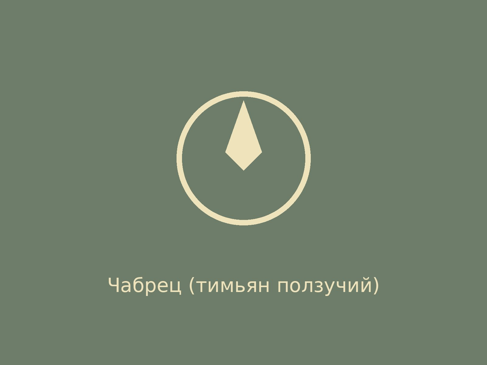

Ароматная трава сухих сосновых боров. В народе — «богородская трава», добавлялась в чай и обереги.
Эфирное масло тимьяна изучено хорошо; в народной медицине применялся при кашле.
— Пётр Зеленин, ботаник
Эфирное масло тимьяна изучено хорошо; в народной медицине применялся при кашле.
— Пётр Зеленин, ботаник